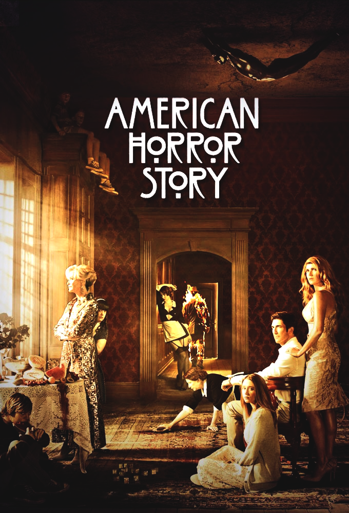
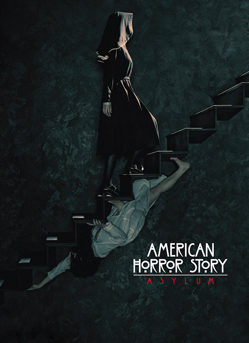
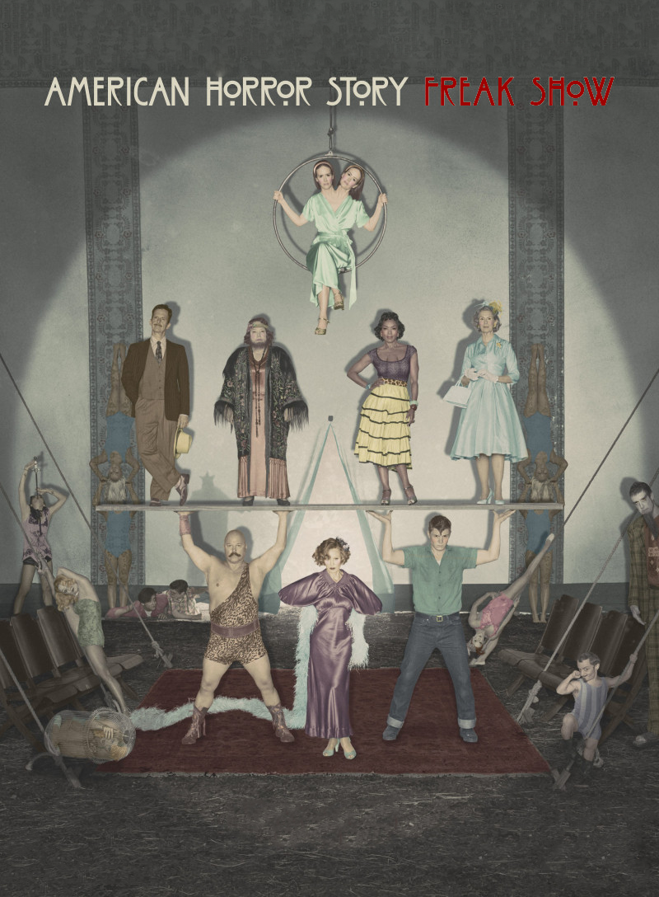
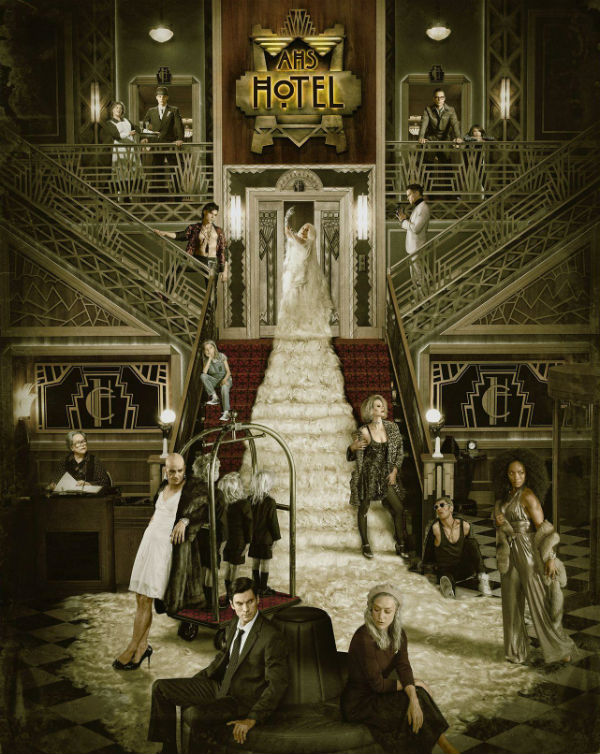
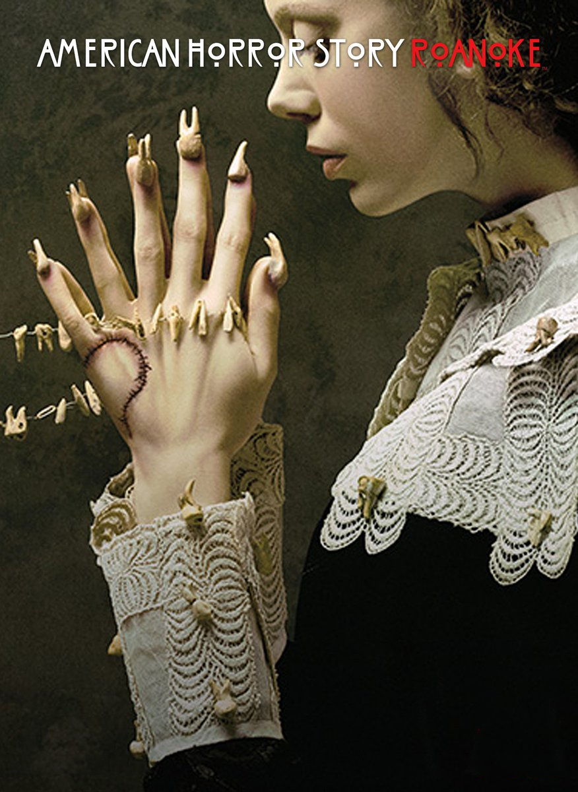
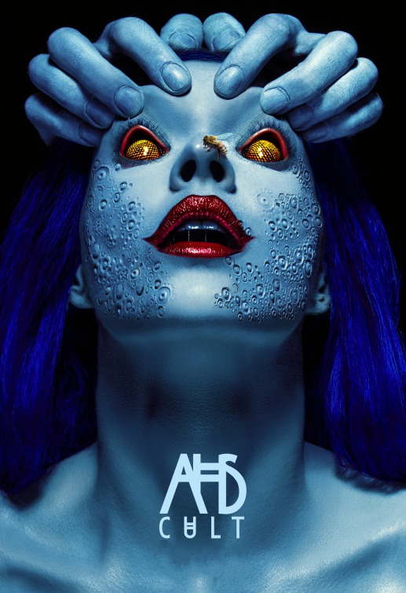

Temporadas

AHS: Murder House
Transmissão: 17 de outubro de 2012 – 23 de janeiro de 2013
Número de Episódios: 13
A história apresenta Ben Harmon, um terapeuta que, após ter uma relação extraconjugal, decide salvar seu casamento. Assim, ele se muda com a esposa Vivien e a filha Violet para uma nova casa. Mas logo eles se envolvem com os estranhos personagens que fazem parte do lugar. Entre eles, Moira O’Hara, a governanta, que é vista por cada um como duas pessoas diferentes. Tem também Constance, uma vizinha intrometida; e o esquisito Larry. Para desespero do pai, Violet se envolve com Tate, um de seus pacientes, que ele acredita ter tendências homicidas.
Elenco regular: Dylan McDermott como o Dr. Benjamin Harmon; Connie Britton como Vivien Harmon; Taissa Farmiga como Violet Harmon; Evan Peters como Tate Langdon; Denis O’Hare como Larry Harvey; Jessica Lange como Constance Langdon.
Elenco recorrente: Frances Conroy como Moira O’Hara; Alexandra Breckenridge como Moira O’Hara jovem; Jamie Brewer como Adelaide; Kate Mara como Hayden McClaine; Christine Estabrook como Marcy; Shelby Young como Leah; Matt Ross como Dr. Charles Montgomery; Lily Rabe como Nora Montgomery; Michael Graziadei como Travis; Morris Chestnut como Luke; Zachary Quinto como Chad; Sarah Paulson como Billie Dean Howard.

AHS: Asylum
Transmissão: 5 de outubro de 2011 – 21 de dezembro de 2011
Número de Episódios: 13
A segunda temporada, intitulada como American Horror Story: Asylum tem como tema a saúde mental. A história se passa em 1964 e acompanha os pacientes, médicos e freiras que ocupam a Instituição Mental Briarcliff, fundada para tratar e abrigar os criminosos insanos. Os administradores que dirigem a instituição incluem a severa Irmã Jude, a segundo em comando Irmã Mary Eunice e o fundador da instituição, o Dom Timothy Howard . Os médicos encarregados de tratar os pacientes no manicômio incluem o psiquiatra Dr. Oliver Thredson e o sádico cientista Dr. Arthur Arden. Os pacientes, muitos dos quais afirmam ser injustamente institucionalizados, incluem a jornalista lésbica Lana Winters , o acusado de assassino em série Kit Walker, e a suposta assassina Grace. Há também elementos espirituais e científicos que manipulam os habitantes do Briarcliff, incluindo possessão demoníaca e extraterrestres.
Elenco regular: Zachary Quinto como Dr. Thredson; Joseph Fiennes como Monsenhor Timothy Howard; Evan Peters como Kit Walker; Sarah Paulson como Lana Winters; Lily Rabe como Irmã Mary Eunice; Lizzie Brocheré como Grace; James Cromwell como Dr. Arden; Jessica Lange como Irmã Jude.
Elenco recorrente: Naomi Grossman como Pepper; Chloë Sevigny como Shelly; Jenna Dewan como Teresa; Adam Levine como Leo; Britne Oldford como Alma; Mark Consuelos como Spivey; Clea DuVall como Wendy Peyser; Frances Conroy como Dark Angel; Franka Potente como Charlotte Brown/Anne Frank; Dylan McDermott como Johnny Thredson.

AHS: Coven
Transmissão: 9 de outubro de 2013 – 29 de janeiro de 2014
Número de Episódios: 13
Mais de 300 anos se passaram desde os tempos turbulentos dos julgamentos das bruxas de Salém, e aqueles que conseguiram escapar agora estão enfrentando a extinção. Têm sido feitos misteriosos ataques contra a sua espécie e as garotas estão sendo enviadas para uma escola especial em New Orleans para aprenderem a se proteger. Em meio a tudo isso, esta a recém-chegada, Zoe, que guarda um terrível segredo. Alarmada com a recente ameaça, Fiona, a bruxa Suprema, volta para a cidade, determinada em proteger o “Coven”, e para isso ela não terá problema algum de dizimar quem ficar em seu caminho.
Elenco regular: Jessica Lange como Fiona Goode; Sarah Paulson como Cordelia Foxx; Taissa Farmiga como Zoe Benson; Emma Roberts como Madison Montgomery; Evan Peters como Kyle Spencer; Lily Rabe como Misty Day; Frances Conroy como Myrtle Snow; Kathy Bates como Madame LaLaurie; Denis O’Hare como Spalding; Jamie Brewer como Nan.
Elenco recorrente: Angela Bassett como Marie Laveau; Gabourey Sidibe como Queenie; Danny Huston como Joe, The Axeman; Patti LuPone como Joan Ramsey; Stevie Nicks como Ela Mesma.
Convidados Especiais: Josh Hamilton como Hank Foxx; Alexander Dreymon como Luke Ramsey; Lance Reddick como Papa Legba; Robin Bartlett como Cecily Pembroke; Leslie Jordan como Quentin; Christine Ebersole como Anna Leigh Leighton; Michael Cristofer como Harrison Renard; Mike Colter como David; Mare Winningham como Alicia Spencer; Alexandra Breckenridge como Kaylee; Chiaki Kuriyama como Yoko Nagasaki.

AHS: Freak Show
Transmissão: 8 de outubro de 2014 – 21 de janeiro de 2015
Número de Episódios: 13
A história começa na pacata cidade de Júpiter, na Flórida, no ano de 1952. Uma trupe circense acaba de chegar à cidade, liderada por Elsa Mars, uma mulher que esconde o seu passado de todos. Os membros incluem Ethel Darling, a mulher barbada e seu filho Jimmy, mãos-de-lagosta; o levantador de peso Dell Toledo e sua atual esposa Desiree; e Dot e Bette Tatler, as irmãs siamesas acusadas do assassinato de sua mãe. Aos arredores da cidade estão Twisty, um palhaço responsável por uma série de mortes; Stanley e Maggie Esmeralda, uma dupla de vigaristas interessados em vender corpos de aberrações; Dandy Mott, um jovem adulto mimado que representa uma ameaça maior do que parece ser; e sua mãe Gloria Mott; que fará de tudo para esconder a real natureza assassina do filho.
Elenco regular: Jessica Lange como Elsa Mars; Sarah Paulson como Bette e Dot Tattler; Evan Peters como Jimmy Darling; Kathy Bates como Ethel Darling; Angela Bassett como Desiree Dupree; Michael Chiklis como Dell Toledo; Frances Conroy como Gloria Mott; Denis O’Hare como Stanley; Emma Roberts como Maggie Esmeralda; Finn Wittrock como Dandy Mott.
Elenco recorrente: Erika Ervin como Amazon Eve; Mat Fraser como Paul; Naomi Grossman como Pepper; Jyoti Amge como Ma Petite; Rose Siggins como Legless Suzi; Christopher Neiman como Salty; Grace Gummer como Penny; Skyler Samuels como Bonnie Lipton; Patti LaBelle como Doreen ‘Dora’ Brown; John Carroll Lynch como Twisty; Major Dodson como Corey Bachman; Lee Tergesen como Vince; Ben Woolf como Meep; Malcolm-Jamal Warner como Angus T. Jefferson; Chrissy Metz como Ima Wiggle; Jamie Brewer como Marjorie Creb; Mare Winningham como Rita; Jay Caputo como Stunt Coord; Drew Rin Varick como Toulouse.
Convidados Especiais: Wes Bentley como Edward Mordrake; Danny Huston as Massimo Dolcefino; Celia Weston como Lillian Hemmings; Gabourey Sidibe como Regina Ross; Matt Bomer como Andy; Lily Rabe como Sister Mary Eunice; Neil Patrick Harris como Chester Creb.

AHS: Hotel
Transmissão: 7 de outubro de 2015 – 13 de janeiro de 2016
Número de Episódios: 12
John Lowe é um detetive que tem seu casamento com a médica Alex Lowe abalado após o desaparecimento de seu filho Holden. Ele é atraído para o Hotel Cortez devido a uma série de mortes que estão sendo cometidas por um serial killer cujas vítimas representam a violação de um dos Dez Mandamentos. Misteriosamente, John parece encontrar Holden no hotel. Procurando por mais informações, ele descobre que o hotel foi fundado pelo magnata e assassino em série James Patrick March, na década 1920, e construído com paredes e corredores secretos, utilizados principalmente para aprisionar e descartar os corpos de suas vítimas. Nos dias atuais, o hotel é regido por Elizabeth, conhecida como "A Condessa", que se alimenta de sangue junto com seu amante Donovan com a ajuda dos funcionários Iris, mãe de Donovan, e a barman transgênero Liz Taylor. O hotel também tem o poder de prender a alma das pessoas que morreram em sua propriedade, como a viciada Sally.
Elenco regular: Lady Gaga como Condessa Elizabeth; Kathy Bates como Iris; Sarah Paulson como Sally McKenna; Evan Peters como Mr. James Patrick March; Wes Bentley como John Lowe; Matt Bomer como Donovan; Chloë Sevigny como Alex Lowe; Denis O’Hare como Liz Taylor; Cheyenne Jackson como Will Drake; Angela Bassett como Ramona Royale.
Elenco recorrente: Mare Winningham como Hazel Evers; Finn Wittrock como Tristan Duffy/Rodolfo Valentino; Lennon Henry como Holden Lowe; Max Greenfield como Gabriel; Richard T. Jones como Detetive Hahn; Shree Coocks como Scarlett Lowe; Lyric Lennon como Lachlan Drake; Helena Mattsson como Agnetha; Kamilla Alnes como Vendela.

AHS: Roanoke
Transmissão: 14 de setembro de 2016 – 16 de novembro de 2016
Número de Episódios: 10
Apresentada como uma série de documentários intitulada My Roanoke Nightmare, a história segue o casal Shelby Miller e Matt Miller que se mudam de Los Angeles para uma casa em Roanoke, na Carolina do Norte. Assim que o casal se instala, ocorrências estranhas e paranormais começam a assombrá-los. Casos como encontrar fitas de VHS sobre o Dr. Elias Cunningham falando sobre casos reais que ocorreram na casa, encontrar o fantasma de Edward Phillipe Mott, construtor da casa e descendente da família Mott, e encontrar a Colônia de Roanoke, liderada pela Açougueira, pela bruxa Scáthach e pelos filhos, como Ambrose White. Depois do seu grande sucesso nos Estados Unidos, My Roanoke Nightmare é renovada para uma "segunda temporada", intitulada Return to Roanoke: Three Days in the Hell, onde traz os atores e os que relataram os casos. Cada um tem um motivo para voltar á casa. Os atores Audrey Tindall, Dominic Banks, Rory Monahan e Monet Tumuslime, que interpretaram respectivamente Shelby Miller, Matt Miller, Edward Mott e Lee Harris no programa, voltam para a segunda temporada, junto com Shelby Miller, Matt Miller e Lee Harris. Então, a temporada traz a revelação de que quase todos os participantes morreram, sobrando apenas uma pessoa.
Elenco regular: Kathy Bates como Agnes Mary Winstead; Adina Porter como Lee Harris; Sarah Paulson como Audrey Tindall/Shelby Miller e Lana Winters; Cuba Gooding Jr. como Dominic Banks/Matt Miller; Lily Rabe como Shelby Miller; André Holland como Matt Miller; Denis O’Hare como William van Henderson/Dr. Elias Cunningham; Wes Bentley como Dylan/Ambrose White; Evan Peters como Rory Monahan/Edward Phillipe Mott; Cheyenne Jackson como Sidney Aaron James; Angela Bassett como Monet Tumusiime/Lee Harris.
Elenco recorrente: Lady Gaga como Scáthach; Frances Conroy como Mama Polk; Finn Wittrock como Jether Polk; Taissa Farmiga como Sophie Green; Leslie Jordan como Ashley Gilbert/Cricket Marlowe.

AHS: Cult
Transmissão: 5 de setembro de 2017 – 14 de novembro de 2017
Número de Episódios: 11
Após as eleições presidenciais dos Estados Unidos de 2016, a cidade fictícia de Brookfield Heights, em Michigan, fica dividida. A proprietária do restaurante local, Ally Mayfair-Richards, está completamente perturbada pela vitória de Donald Trump e várias de suas fobias de longa data, incluindo a coulrofobia, a hemofobia e a tripofobia, se intensificam com os recentes acontecimentos e ela tenta conseguir a ajuda de sua esposa, Ivy, e seu psiquiatra, Dr. Rudy Vincent, para curar suas fobias. Um dos residentes de Brookfield Heights, um sociopata manipulador chamado Kai, se alegra com os resultados das eleições e fica inspirado a seguir o poder político. Então, Kai forma um culto para conseguir realizar suas ideologias, contando com a ajuda de seus seguidores; entre eles, sua irmã Winter, os vizinhos Harrison e Meadow, além do detetive Jack Samuels e da repórter local Beverly Hope.
Elenco regular: Sarah Paulson como Ally Mayfair-Richards e Susan Atkins; Evan Peters como Kai Anderson, Andy Warhol, Marshall Applewhite, David Koresh, Jim Jones, Jesus e Charles Manson; Cheyenne Jackson como Dr. Rudy Vincent; Billie Lourd como Winter Anderson e Linda Kasabian; Alison Pill como Ivy Mayfair-Richards.
Elenco recorrente: Adina Porter como Beverly Hope; Colton Haynes como Detetive Jack Samuels; Leslie Grossman como Meadow Wilton e Patricia Krenwinkel; Chaz Bono como Gary Longstreet; Cooper Dodson como Ozymandias "Oz" Mayfair-Richards; Dermot Mulroney como Bob Thompson; Cameron Cowperthwaite como Speedwagon.
Convidados Especiais: Billy Eichner como Harrison Wilton e Charles "Tex" Watson; Emma Roberts como Serena Belinda; Mare Winningham como Sally Keffler; Lena Dunham como Valerie Solanas; Frances Conroy como Bebe Babbitt.
Sobre a Oitava Temporada
Em 12 de janeiro de 2017, a série foi renovada para uma oitava temporada, prevista para estrear em 2018. Em 5 de janeiro de 2018, o criador e produtor executivo da série, Ryan Murphy, anunciou que a temporada se passaria no futuro. Em 6 de abril de 2018, foi revelado que a oitava temporada se passaria 18 meses no futuro, em outubro de 2019, e contaria com um crossover entre Asylum e Coven. As filmagens da temporada começam em 16 de junho de 2018. Em 1 de outubro de 2017, foi anunciado que a atriz Sarah Paulson retornaria na oitava temporada e usaria aparelhos dentários. Em 20 de março de 2018, foi anunciado que Kathy Bates e Evan Peters também retornariam, e liderariam a temporada junto com Sarah Paulson. Em 4 de abril de 2018, foi anunciado que a atriz Joan Collins havia se juntado ao elenco em um papel não especificado. Evan Peters interpretará um cabeleireiro cômico e Joan Collins interpretará sua avó. Adina Porter, Cheyenne Jackson, Billy Eichner e Leslie Grossman também foram confirmados para retornar.